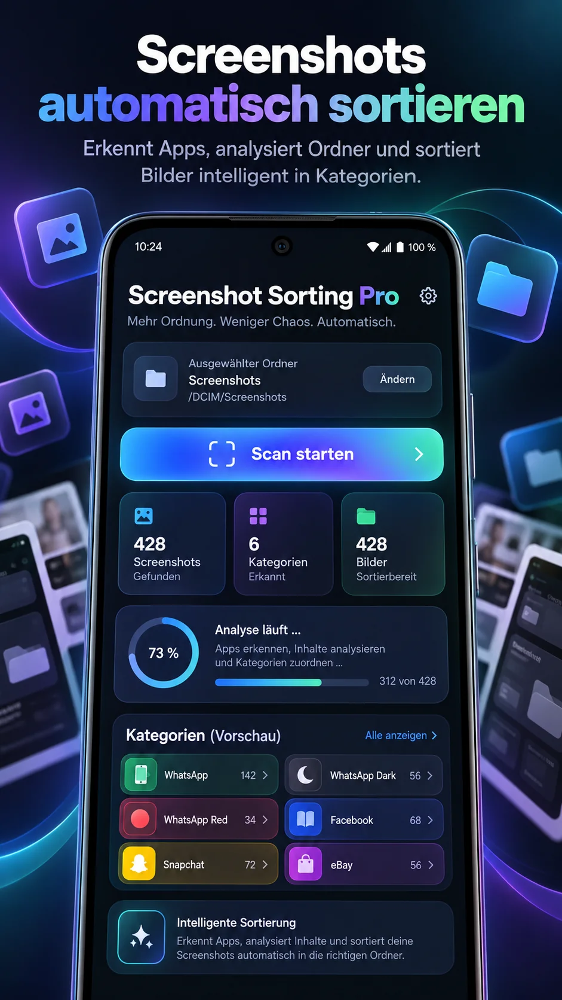
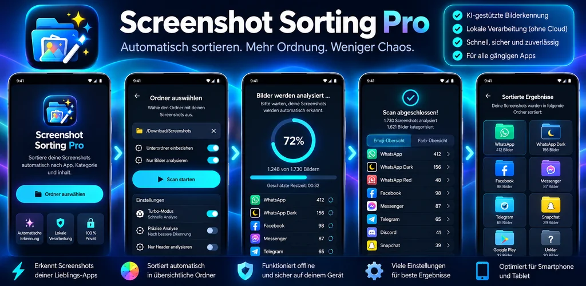

01 / ANALYSE
Apps intelligent erkennen
Farbprofile und charakteristische Elemente helfen dabei, Screenshots aus WhatsApp, Facebook, Telegram und vielen weiteren Apps zuzuordnen.
WhatsAppFacebookTelegramDiscord
Hunderte Screenshots, aber nichts wiederzufinden? Screenshot Sorting Pro erkennt typische App-Ansichten und hilft dir, Bilder automatisch in übersichtliche Kategorien einzuordnen.
Designvorschau: Die gezeigten Oberflächen sind Illustrationen und können vom aktuellen App-Stand abweichen.

Vom ersten Scan bis zum fertigen Ordner: Eine durchdachte Arbeitsfläche für deine Screenshot-Sammlung.
Farbprofile und charakteristische Elemente helfen dabei, Screenshots aus WhatsApp, Facebook, Telegram und vielen weiteren Apps zuzuordnen.
Wähle zwischen schnellen Scans und detaillierterer Erkennung. Behalte den Fortschritt jederzeit im Blick.
Organisiere Bilder nach Apps, sieh dir Ergebnisse vorab an und behalte die Zielordner im Überblick.
Die Bildverarbeitung ist für die lokale Nutzung auf deinem Android-Gerät konzipiert – ohne erforderlichen Upload deiner Screenshots.
Passe Scan-Modus, unterstützte Kategorien und Dateiaktionen an deine Bedürfnisse an.
Weniger Suchen, mehr Zeit für die wichtigen Dinge.
Wähle den Ordner mit deinen Screenshots über die Android-Dateiauswahl.
Die Erkennung ordnet passende Screenshots ihren Kategorien zu und zeigt den Fortschritt.
Prüfe die Ergebnisse und lasse Dateien übersichtlich in Unterordner sortieren.
Entdecke die Oberflächen der App – vom Dashboard bis zu den Einstellungen.
Hinweis: Die gezeigten Screenshots sind Designvisualisierungen und keine verifizierten Aufnahmen eines aktuellen Builds.
Aus vielen Einzelbildern werden übersichtliche App-Kategorien. Deine Sammlung bleibt nachvollziehbar – auch wenn es mal richtig viele Screenshots sind.

Die Erkennung nutzt unter anderem Farbprofile und typische Bildbereiche, um Screenshots bestimmten Apps zuzuordnen. Nicht jeder Treffer ist eindeutig; dafür gibt es die Kategorie „Unklar“.
Die dargestellte Bildanalyse ist für die lokale Ausführung auf Android ausgelegt. Ob die veröffentlichte Version weitere Dienste verwendet, steht in der Datenschutzerklärung der jeweiligen App-Version.
Ja, das ist als Dateiverarbeitungsoption vorgesehen. Für einen sicheren Einstieg empfiehlt sich der Kopiermodus, damit die Originaldateien erhalten bleiben.
Der Google-Play-Link wird auf dieser Seite eingeblendet, sobald er in der Konfiguration hinterlegt wurde. Bis dahin kannst du dich per E-Mail nach dem Veröffentlichungsstand erkundigen.
Ja. Diese Website benötigt weder Server noch Build-Tools: Dateien hochladen, GitHub Pages aktivieren, fertig.
Entdecke Screenshot Sorting Pro – smarter sortieren statt endlos suchen.